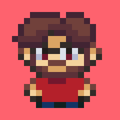

Gabriel de Carvalho
Gabiru - ele/dele
Gamedev fascinado por programação, design de jogos e narrativa.
Desde 2022, crio jogos de forma independente. Iniciei como artista 3D e atuei como level designer na indústria. Aprendi programação para criar meus próprios jogos - paixão que me move até hoje.
Em 2024, eu e alguns amigos fundamos o Estúdio Calembur! Onde trabalhei como diretor, programador e game designer. Já desenvolvemos 7 jogos em game jams (em menos de um ano!), dois deles foram premiados.